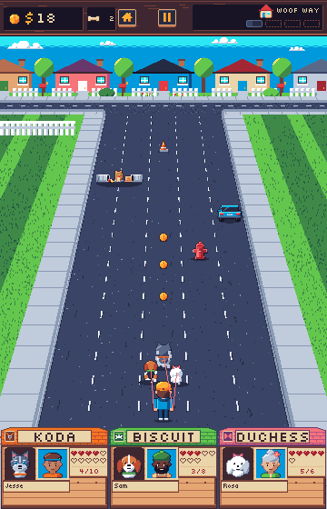
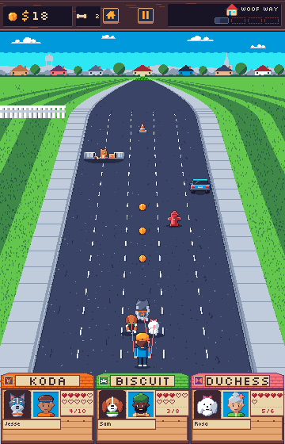
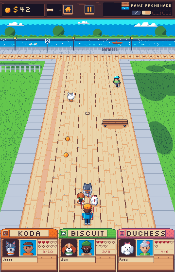
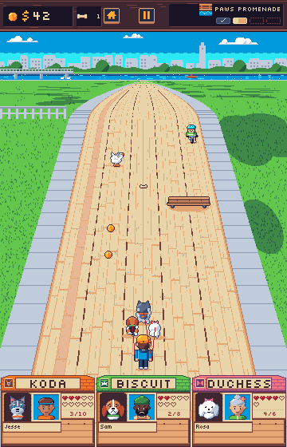

Horizon
An OutRun-style horizon in place of the backdrop's cross street. The road runs on to a vanishing point, with the zone's neighbourhood as a low skyline along the horizon under the sky. The camera is the game's: everything from the road's far edge (row 150) down is the same in both versions, and only the backdrop band above it changes. The top bar, pack, road objects and doghouses are the real exports.
How it fits the camera
- The camera's true vanishing point is on row -164, above the screen. A flat road continued into the band would still be 120px wide at its top, so the ground bends away past the far edge instead. From row 150 up to the horizon row, the road's scale falls from 0.5 to 0 along a curve whose slope matches the camera's at row 150. The edges leave the far edge without a kink and meet at the vanishing point.
- The horizon sits on row 96 (band row 56) on Elm Avenue and row 100 on Riverside Path. That leaves about 55 rows of sky and skyline above the horizon and 50 rows of road bending away below it.
- The lane lines, curbs, sidewalks and mown stripes converge on the vanishing point. Far rows sample the strip shrunk 8 to 64 times, as the game's strip levels do, so the dashes merge into the road colour before they shimmer. The last 6 rows dither the road and sidewalk into the lawn, as the game's far-road fade does.
- The near-left perch and the near-right lawn stay where the backdrops have them, so the cat and sprinkler gags keep their spots.
Elm Avenue
Hazy hills behind a water tower and a church steeple. In front of them are the grey rooftops of the next streets, then a row of little houses and round trees on a hedge line. The hedge opens where the street runs on, under a house at its end.


Riverside Path
The river runs across the horizon, so the boardwalk ends at the water. On the far bank are a hazy old town with a clock tower, a treeline, a footbridge on stone piers, a rowboat and ducks.

